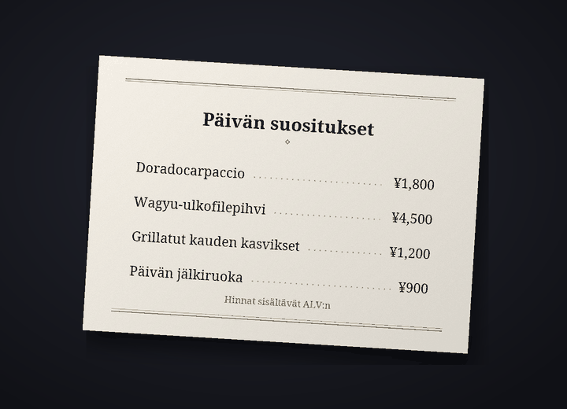

Käännösbotti Discord-keskusteluihin
Juttele Discordissa omalla kielelläsi
Cozirom on Discord-botti, joka kääntää keskustelun toisen kielelle. Kun otat sen käyttöön, viestisi julkaistaan käännettyinä omalla nimelläsi ja profiilikuvallasi, ja myös kuvien teksti käännetään.
Käännökset tekee AI (Anthropicin Claude). Se voi erehtyä, joten tarkista tärkeissä asioissa myös alkuperäinen viesti.
Mitä botti tekee
Yksi botti kääntää tekstit, kuvat ja äänen
Tilausten rajat lasketaan käännöksinä. Yksi viesti käännettynä yhdelle kielelle on 1 käännös.
6 toimintoa
Käännöksinä
Automaattinen kääntäminen
Suorita komento
/käännä päällekerran, niin viestisi sillä palvelimella julkaistaan toisen kielellä omalla nimelläsi ja profiilikuvallasi. Alkuperäinen viesti näkyy pienellä tekstillä käännöksen alla, ja painikkeella näet koko alkuperäisen viestin.
näet koko alkuperäisen viestin.KäännöksiäViestiä kohden 1
Kuvien teksti
Ruokalistat, peliruudut, meemit: jos kuvassa on tekstiä, se luetaan ja käännetään. Avaa käännös kuvakkeesta
 , joka näkyy kääntämisen käyttöön ottaneiden kuvien alla, tai kakkospainikkeen kautta. Tuloksen näkee vain pyytäjä, eikä tekstittömiä kuvia lasketa.
, joka näkyy kääntämisen käyttöön ottaneiden kuvien alla, tai kakkospainikkeen kautta. Tuloksen näkee vain pyytäjä, eikä tekstittömiä kuvia lasketa.KäännöksiäKuvaa kohden yleensä noin 9
Käännös kuvan päälle
Kuvakkeesta
 saat kopion kuvasta, josta alkuperäinen teksti on poistettu ja käännös piirretty tilalle. Aluksi käytössä on ”Kuten alkuperäinen”, joka valitsee alkuperäistä kirjoitusta muistuttavan fontin, ja voit vaihtaa enintään 10 fonttisarjan välillä, esimerkiksi ”Antiikva”, ”Käsiala” tai ”Sarjakuva”, kuluttamatta käännöksiä. Se toimii parhaiten vaakasuorassa tekstissä, kuten kuvakaappauksissa, meemeissä, peliruuduissa ja ruokalistoissa, ja tuloksen näkee vain painikkeen painaja.
saat kopion kuvasta, josta alkuperäinen teksti on poistettu ja käännös piirretty tilalle. Aluksi käytössä on ”Kuten alkuperäinen”, joka valitsee alkuperäistä kirjoitusta muistuttavan fontin, ja voit vaihtaa enintään 10 fonttisarjan välillä, esimerkiksi ”Antiikva”, ”Käsiala” tai ”Sarjakuva”, kuluttamatta käännöksiä. Se toimii parhaiten vaakasuorassa tekstissä, kuten kuvakaappauksissa, meemeissä, peliruuduissa ja ruokalistoissa, ja tuloksen näkee vain painikkeen painaja.KäännöksiäKuvaa kohden yleensä noin 19


Esimerkki: alkuperäinen kuva (japaninkielinen ruokalista) ja sama kuva, josta teksti on poistettu ja suomenkielinen käännös piirretty tilalle Antiikva-fontilla. Ääniviestit
Napsauta puhelinsovelluksesta lähetettyä ääniviestiä kakkospainikkeella, niin näet, mitä siinä sanottiin, ja sen käännöksen. Enintään 3 minuutin viestit litteroidaan, eikä viestejä, joissa ei puhuta, lasketa.
KäännöksiäSekuntia kohden 1 ja lisäksi käännös10 sekunnin viesti on yleensä 11
Neljä sävyä
Slangi, rento, ystävällinen tai muodollinen, valittuna palvelimittain. Rennosti kavereiden kanssa, muodollisesti uusissa paikoissa. Guest-tilauksella (ilmainen) saat kaikki neljä ensimmäiset 14 päivää ja sen jälkeen ystävällisen sävyn.
KäännöksiäMaksulliset: kaikki. Free: ensimmäiset 14 päivää
31 kieltä
Käännöskieliä on 31. Botin näkymät ja komentojen nimet näkyvät 30 Discordin kielellä, joten toinenkin voi ottaa botin käyttöön omalla kielellään.
Käännöksiä31 käännöskieltä, 30 näyttökieltä

Näin aloitat
Kolme vaihetta, ja viestisi näkyvät käännettyinä nimelläsi
Lisää botti palvelimelle
Palvelimen ylläpitäjä lisää botin palvelimelle. Kutsulinkkiä voi pyytää täältä: tukipalvelin.
Ota kääntäminen käyttöön
Jokainen, joka haluaa viestinsä käännettävän, suorittaa palvelimella komennon
/käännä päälle. Botti arvaa sinun ja toisen kielen ja avaa asetuspaneelin. Jos ne eivät osu oikein, vaihda ne pudotusvalikoista.Kirjoita tavalliseen tapaan
Kirjoita tavalliseen tapaan, niin käännös näkyy nimelläsi. Aloita Guest-tilauksella (ilmainen) ja vaihda tilausta tilaussivulla, kun tarvitset enemmän.
Tietosuoja
Käännettävät viestit ja kuvat lähetetään vain Anthropicille (Yhdysvallat), ja ääniviestien ääni vain Googlelle (Yhdysvallat). Botti säilyttää julkaistun käännöksen alkuperäisen tekstin 14 päivää ja välimuistissa olevat käännökset 30 päivää, eikä se tallenna kuvia, ääntä tai niistä luettua tekstiä. Keskustelujen sisältöä ei koskaan kirjata lokeihin, ja komento /käännä poista-tietoni poistaa tietosi milloin tahansa.